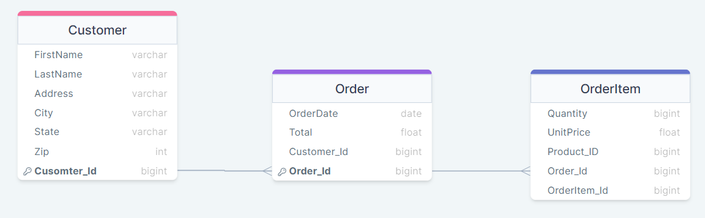

Relational Databases¶
A relational database is a database that stores data in tables. Each table has a set of columns and rows. The columns define the data types of the data, and the rows store the actual data.
Relational databases are based on the relational model, which was developed by Edgar F. Codd in the 1970s. The relational model is a way of organizing data that makes it easy to understand and manage.
In a relational database, data is stored in tables. Each table has a unique name, and each column in a table has a unique name. The rows in a table store the actual data.
The data in a relational database is related to each other by primary keys and foreign keys. A primary key is a column in a table that uniquely identifies each row in the table. A foreign key is a column in a table that references the primary key of another table.
Relational databases are a popular choice for storing data because they are easy to understand and manage. They are also very efficient at storing and retrieving data.
Here are some of the benefits of using relational databases:
Data integrity: Relational databases enforce data integrity by using primary keys and foreign keys. This helps to ensure that the data in the database is accurate and consistent.
Performance: Relational databases are very efficient at storing and retrieving data. This is because the data is stored in tables, which makes it easy to find and access the data that you need.
Scalability: Relational databases can be scaled up to handle large amounts of data. This is because the data is stored in tables, which can be easily added or removed as needed.
Security: Relational databases can be secured by using passwords and permissions. This helps to protect the data in the database from unauthorized access.
Overall, relational databases are a powerful tool for storing and managing data. They are easy to understand, efficient, and scalable.
In relational databases, an entity map is a diagram that shows the relationships between the entities in a database. Entities are the basic objects that are stored in a database, such as customers, products, or orders.
Entity maps are used to:
Design a database schema.
Document the relationships between entities.
Validate the database design.
Communicate the database design to other developers.
Entity maps are typically created using a graphical notation. The most common notation is the Entity-Relationship (ER) diagram.
An ER diagram consists of a collection of entities, relationships, and attributes.
Entities are represented by boxes.
Relationships are represented by lines.
Attributes are represented by ovals.
The following is an example of an ER diagram for a database that stores information about customers and orders:

In this diagram, the Customer entity has the following attributes:
CustomerID(primary key)NameAddressPhone
The Order entity has the following attributes:
OrderID(primary key)CustomerID(foreign key)OrderDateTotal
The OrderItem entity has the following attributes:
OrderID(foreign key)ProductID(foreign key)QuantityUnitPrice
The Product entity has the following attributes:
ProductID(primary key)NameDescriptionPrice
Entity maps are a valuable tool for designing and developing relational databases. They help to ensure that the database design is correct and that the relationships between entities are clearly defined.